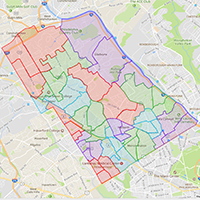

Mary Walsh
I am a front-end developer based in the City of Brotherly Love. Starting with a BS in Computer Science my curiosity and passion took me across Europe and Asia. Now settled, I love coding, designing, writing and being a part of the creative, talented and generous tech community. I can also be found hiking, running, and painting.
A Few Projects.....

Polling Place Finder
Click on your neigborhood to find your polling place

HTML5-Canvas Game
Re-make of the classic frogger game - Enjoy!
Art in Philly
Customized, interactive map showing Philly's best art spots. Uses Google and Foursquare APIs
Recent Websites
Eliza Auth
Artist Webpage

PCFR
The Philadelphia Committee
on Foreign Relations
MLNC
Mainline Newcomers Club